PART 2: TRAINING
11.8 Procedural Lab
This lab walks you through the step-by-step actions that you must follow to properly compound two SVP preparations using two reconstitution techniques. Take your time. Work through each step methodically and with close attention to detail.
Note: For the purposes of this procedural lab, you will not perform handwashing and PEC cleaning and disinfection procedures unless directed to do so by your instructor. Should your instructor ask you to perform these procedures, refer to Chapter 8 for instructions on handwashing and to Chapter 9 for cleaning and disinfection procedures of a PEC.
Essential Supplies
To complete the Unit 2 procedural labs, ensure that various essential anteroom and buffer room supplies such as those listed in Table 11.2 are available for your use. If you are using a PEC other than a LAFW, you will need to alter some procedures to account for the type of PEC and the direction of airflow coming from the HEPA filter. In this case, refer to instructor direction or facility SOPs for specific instructions regarding this procedural lab.
| Anteroom Supplies |
|---|
|
| Note: As mentioned earlier, the Chapter 11 Procedural Lab does not include steps for performing hand-washing procedures. If your instructor directs you to perform handwashing as part of the Chapter 11 Procedural Lab, you will need access to a sink and hand-washing supplies. Refer to Chapter 8 for details on hand hygiene procedures. Remember that, in practice, you must perform hand hygiene procedures prior to preparing a CSP in a sterile compounding area. |
| Buffer Room Supplies |
|
| Note: As mentioned earlier, the Chapter 11 Procedural Lab does not include steps for cleaning and disinfecting the PEC. If your instructor directs you to do this as part of the Chapter 11 Procedural Lab, you will need access to PEC cleaning and disinfecting supplies. Refer to Chapter 9 for details on cleaning and disinfection procedures. Remember that, in practice, you must clean and disinfect a PEC prior to preparing a CSP. |
Procedure-Specific Supplies
In addition to the supplies listed in Table 11.2, gather the following items:
- ampicillin 500 mg vials × 2
- SWFI 10 mL vials × 2
- 50 mL NS IVPB × 2
- 10 mL Luer-lock syringe × 3
- 3 mL Luer-lock syringe
- regular needles (nonfilter, nonvented needles, 18 gauge to 20 gauge) × 4
- vented needle
- sterile 70% IPA swabs
- tamper-evident, sterile, adhesive seals
- procedure-specific ampicillin CSP labels × 2
- medication order.
Procedure
Take a careful, deliberate approach to each detailed step of this procedural lab. In practice, using this approach helps to ensure the compounding of a sterile preparation. Refer to instructor directions or facility SOPs to determine whether goggles are required for the procedure and whether sterile gloves should be donned in the anteroom or buffer room.
Note: For step 1, please refer to Chapter 6 for a reminder of the step-by-step procedures required for medication order and CSP label verification. For steps 2 and 3, refer to Chapter 7 for assistance in performing calculations. For steps 4–8, refer to Chapter 5 for a reminder of the process for gathering and staging supplies. For steps 9–20, refer to Chapter 8 for hand hygiene and garbing procedures. For the purposes of this lab, you should perform steps 1–17 and steps 83–85 in the anteroom and steps 18–82 in the buffer room.
Verifying the Labels
- Verify that the CSP labels (see Figure 11.2) matches the medication order (see Figure 11.4).
View long description Hide description
Left: The label reads as follows: I V piggyback, memorial hospital, patient name, room, patient ID number, R X number. Ampicillin 500 milligrams, sodium chloride 0.9 percent (N S) 50 milliliters, rate: over 20 minutes. Keep refrigerated. Warm to room temperature before administration. This is a compounded preparation. Add bottom: B U D, tech, and R P h. Right: The label reads as follows: I V piggyback, memorial hospital, patient name, room, patient ID number, R X number. Ampicillin 250 milligrams, sodium chloride 0.9 percent (N S) 50 milliliters, rate: over 20 minutes. Keep refrigerated. Warm to room temperature before administration. This is a compounded preparation. Add bottom: B U D, tech, and R P h.
Calculating Desired Volume
- Read the label on one of the ampicillin vials to determine the desired concentration of the drug once it has been reconstituted (see Figure 11.3).
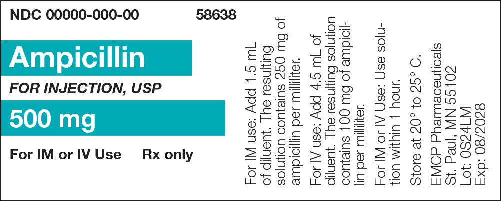
View long description Hide description
The information is as follows: ID number, name, DOB, room, and doctor. A table at left shoes 4 columns for date, time, orders, and physician signature. Information above the left table includes allergy or sensitivity to and diagnosis. A table at the right for completed or discontinued status shows name, date, and time.
Workplace Wisdom
In certain situations, a concentration other than what is shown on the label of the drug vial or specified in the drug’s package insert is desired. To determine that concentration, pharmacy personnel must perform calculations using the drug’s powder volume and diluent volume. This calculation becomes a bit trickier when a partial vial is used in the compounding of a CSP (e.g., Scenario Two of this procedural lab) and is not of particular concern if the entire contents of a vial is used.
In Scenario Two, a 250 mg dose is obtained from a 500 mg vial of ampicillin. The manufacturer’s powder volume (PV) is 0.5 mL. To yield a desired 100 mg/mL concentration commonly used for IV infusion of an ampicillin SVP, the powder volume (PV) and the diluent volume (DV) must be calculated using the following formulas:
| Powder Volume | Diluent Volume |
| PV = FV – DV | DV = FV – PV |
| PV = powder volume | |
| FV = final volume | |
| DV = diluent volume |
- Find the final volume using the desired concentration and the vial size.
Want: final volume (FV)
Have: desired concentration, 100 mg/mL; 500 mg vial
\(\frac{{500{\rm{\;mg}}}}{{5{\rm{\;mL}}}} = \frac{{500{\rm{\;mg}}}}{{x{\rm{\;mL}}}}\)
x = 5 mL
final volume (FV) = 5 mL
- Find the diluent volume using this formula: DV = FV – PV
Want: diluent volume (DV)
Have: powder volume (PV) = 0.5 mL; final volume (FV) = 5 mL
5 mL – 0.5 mL = 4.5 mL
DV = 4.5 mL
Therefore, in Scenario Two, 4.5 mL of diluent is added to the 500 mg vial, yielding a 100 mg/mL concentration.
- Perform the calculations based on the ampicillin dosage information provided on the CSP label and the ampicillin’s final concentration. You must perform a separate calculation for each of the two CSPs that you are required to prepare. Assume that the label indicates that ampicillin, once reconstituted, has a concentration of 500 mg/5 mL. Use the following formulas to calculate the dose needed in each scenario:
Scenario One Scenario Two \(\frac{{500{\rm{\;mg}}}}{{5{\rm{\;mL}}}} = \frac{{500{\rm{\;mg}}}}{{x{\rm{\;mL}}}}\) \(\frac{{500{\rm{\;mg}}}}{{5{\rm{\;mL}}}} = \frac{{250{\rm{\;mg}}}}{{x{\rm{\;mL}}}}\) Cross-multiply and then divide to solve for x, or the desired dosage volume for each dose. (For additional assistance, refer to Chapter 7 for step-by-step dosage calculation procedures.)
Gathering and Staging Supplies
- Place the medication order into a large plastic bag and each of the CSP labels into separate, small plastic bags. Gather all supply items listed in the Supplies section of the procedural lab.
- Using one or more low-lint wipers presaturated with sterile 70% IPA, thoroughly wipe down the entire transport vehicle. Then discard the used wiper(s) into the waste container.
- Before crossing into the clean side of the anteroom, use a new, low-lint wiper presaturated with sterile 70% IPA to wipe the surface of the IVPB bag’s dust cover. Then place the IVPB bag on the transport vehicle.
- Repeat the procedure outlined in step 6 with each of the remaining supply items.
- Discard the used wiper(s) into the waste container.
Garbing
- Don shoe covers while stepping over the line of demarcation into the clean side of the anteroom.
- Don a head cover.
- Don a face mask.
- Don a facial hair cover (if needed).
- Don goggles for eye protection (if needed).
Note: For the purpose of this training lab, you will skip handwashing, unless told otherwise by your instructor.
- Don a gown.
- Apply an alcohol-based hand rub to all surfaces of your hands and allow your hands to dry thoroughly.
- Don sterile gloves.
- Apply sterile 70% IPA to all surfaces of your gloves and allow your gloved hands to dry thoroughly.
- Use a transport vehicle to bring all supply items into the buffer room.
- Place the transport vehicle onto a table or cart within the buffer room. If a cart is used, position it so that it does not interrupt airflow into the PEC’s prefilter.
- Apply sterile 70% IPA to all surfaces of your gloves and allow your gloved hands to dry thoroughly.
Note: For the purposes of this training lab, you will skip cleaning and disinfecting the PEC, unless told otherwise by your instructor.
Compounding the SVP Solution—Scenario One
- Tear open the dust cover and remove the first IVPB base solution bag. Place the bag into the DCA of the PEC, and discard the dust cover into the waste container. Wipe each remaining item with sterile 70% IPA using low-lint wipers just before it is introduced into the outer six-inch zone of the PEC.
- Remove the plastic, flip-top cap from one vial of SWFI by holding the vial in your hand and forcing the cap upward with your thumb or forefinger. Place the plastic vial cap into the discard pile. Position the vial within the DCA so that it receives uninterrupted airflow from the PEC’s HEPA filter.
- Tear open the package of a new, sterile 70% IPA swab, remove the swab, and place it on the work surface in an area that receives uninterrupted airflow from the PEC’s HEPA filter.
- Bring a new, sterile 70% IPA swab package into the DCA, open the package, and remove the IPA swab. While holding the IPA swab between the thumb and forefinger of your hand, wipe the swab once or twice across the vial stopper. Place the used swab into the discard pile.
- Remove one 10 mL syringe from its outer wrapper and, if necessary, remove the cap. Place the syringe’s outer wrapper and cap into the discard pile.
- Without placing the uncapped syringe onto the PEC’s work surface—and without touching or shadowing the syringe tip—hold the barrel of the syringe in your hand. Maintain the position of the syringe within the DCA to ensure that the syringe tip receives interrupted airflow from the PEC’s HEPA filter.
- While holding the barrel of the syringe in your hand—and while keeping the syringe tip pointed toward the PEC’s HEPA filter—use the fingers of both hands to carefully peel apart the regular needle packaging. Take care not to touch or shadow the needle hub or syringe tip at any time. Using a twisting motion, gently screw the capped regular needle hub onto the syringe tip. Place the needle packaging into the discard pile.
Withdrawing the Correct Diluent Volume Using the Milking Technique
- Grasp the empty syringe—with attached, capped needle. Use your other hand to pull down on the flat knob of the plunger to draw approximately 5 mL of air into the syringe.
- Transfer the syringe to your other hand, grasping the syringe at the barrel.
Hold it as you would a dart, and remove the needle cap by pulling it carefully but firmly off of the needle. Place the needle cap, with the open end pointing toward the HEPA filter, on top of the IPA swab on the work surface.
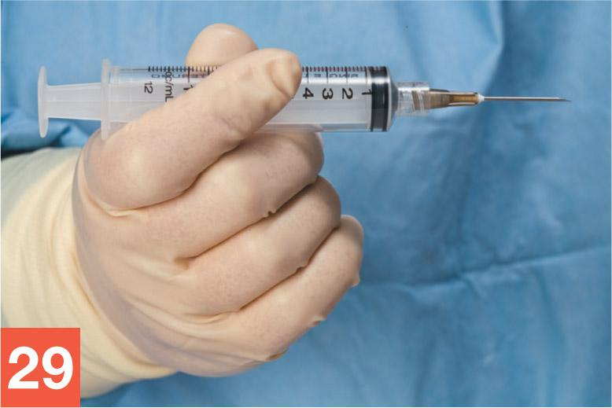
George Brainard/© Paradigm Education Solutions
- Use your fingers to rotate the barrel of the syringe so that the bevel of the needle is pointed up toward the ceiling.
- While using your other hand to brace the SWFI vial against the PEC’s work surface, place the tip of the needle, bevel up, onto the center of the vial stopper.
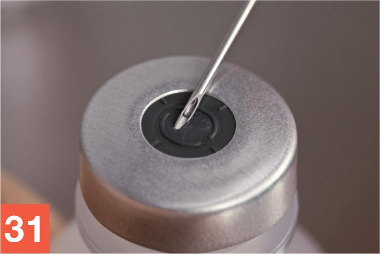
George Brainard/© Paradigm Education Solutions
- Insert the needle into the vial using a slight upward rotation of the wrist (rotating in a counterclockwise direction if you are right-handed and in a clockwise direction if you are left-handed). Keep the tip of the needle in contact with the vial stopper at all times. There should be a slight, almost imperceptible, bend to the needle as it enters the vial.
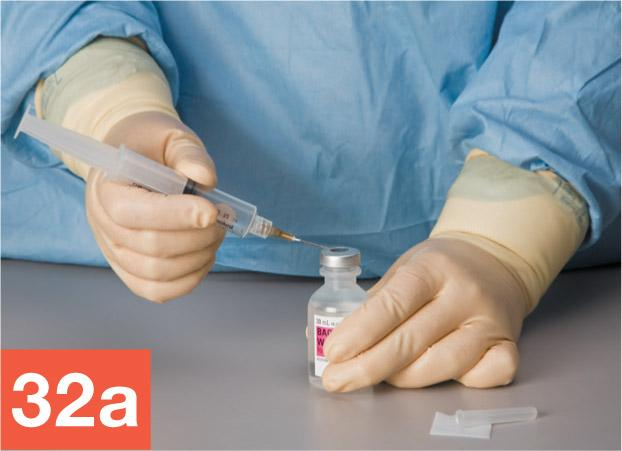
George Brainard/© Paradigm Education Solutions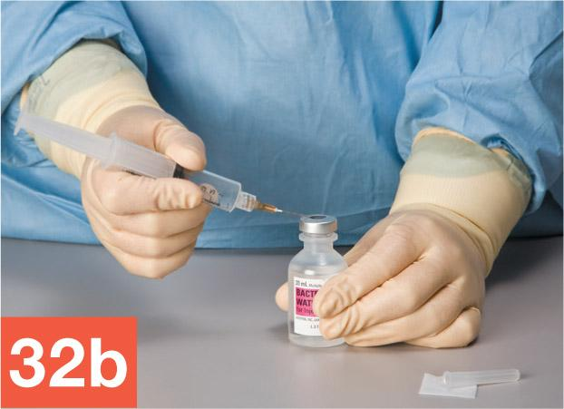
George Brainard/© Paradigm Education Solutions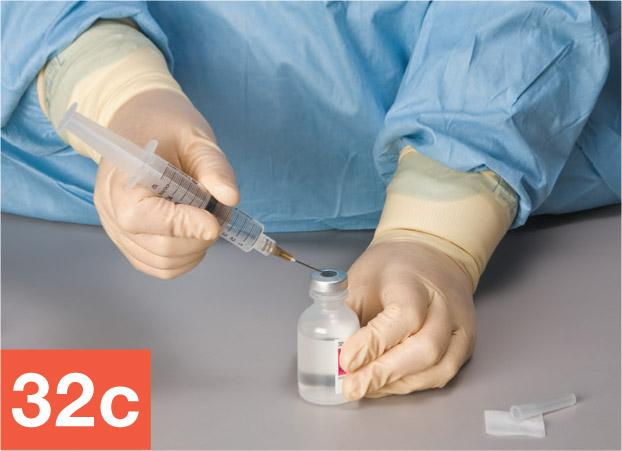
George Brainard/© Paradigm Education Solutions
- Hold the SWFI vial with your one hand and the syringe, with needle firmly inserted into the vial, with your other hand. Invert the vial using a clockwise motion (a counterclockwise motion if you are left-handed), so that the needle-and-syringe unit is now below the vial.
- Use your thumb to gradually push up on the flat knob of the plunger to inject a small amount of air (approximately 3 mL) into the SWFI vial, creating a slight positive pressure within the vial. Release the plunger and allow fluid to flow into the syringe. Repeat this milking process until you have a minimum of 5.5 mL of SWFI in the syringe.
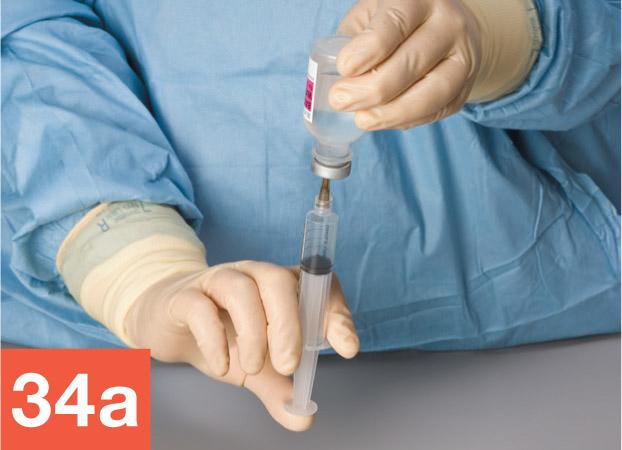
George Brainard/© Paradigm Education Solutions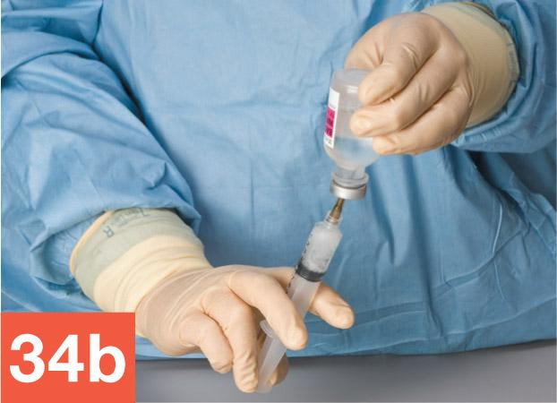
George Brainard/© Paradigm Education Solutions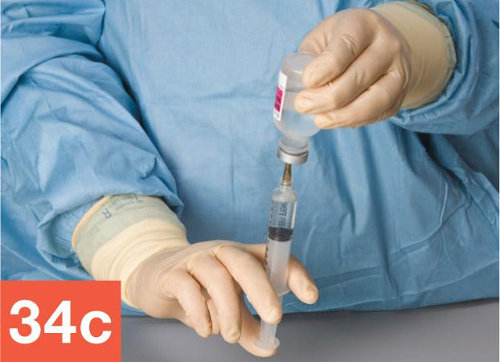
George Brainard/© Paradigm Education Solutions - While ensuring that the needle remains entirely within the vial, hold the vial between your thumb and forefinger, allowing the barrel of the syringe to rest against the palm of that hand. Be sure to position your hand in a manner that continues to allow airflow to the critical sites. Then, tap the barrel of the syringe with your fingers to force air bubbles within the fluid up toward the tip of the syringe. You must take care to perform this action in such a way that you do not bring your hand between the critical sites and the PEC’s HEPA filter at any time.
- Push up on the flat knob of the plunger with your thumb to expel the air bubbles that have gathered near the tip of the syringe, along with any extra fluid, including the extra 0.5 mL of fluid that was drawn up to facilitate bubble removal.
- Verify that the syringe now contains the desired amount of diluent. (For the SWFI diluent, the desired volume is 5 mL.)
- While keeping the needle firmly inserted in the vial, use a counterclockwise rotation (a clockwise rotation if you are left-handed) to return the vial and syringe to the original starting position, with the upright vial braced against the PEC’s work surface and your hand grasping the barrel of the syringe. Slowly remove the needle-and-syringe unit from the SWFI vial. Remember to avoid touching the plunger or flat knob of the syringe at any time while removing the needle-and-syringe unit from the vial.
- Carefully recap the needle and place the capped needle-and-syringe unit, now filled with diluent, onto the PEC’s work surface within the DCA.
Reconstituting and Venting a Powdered Drug Vial Using the Milking Technique
- Bring a vial of ampicillin into the DCA and remove the vial’s flip-top cap. Open the package of a new, sterile 70% IPA swab, remove the IPA swab, and wipe the top of the ampicillin vial. Place the used swab within the DCA of the PEC. Place the empty swab package and flip-top cap into the discard pile.
- Pick up the diluent-filled syringe. Hold the syringe as you would a dart, grasping it at the barrel. Remove the needle cap by pulling it carefully but firmly off of the needle. Place the needle cap, with the open end pointing toward the PEC’s HEPA filter, on top of the IPA swab on the work surface.
- Use your fingers to rotate the barrel of the syringe so that the bevel of the needle is pointed up toward the ceiling.
- While bracing the ampicillin vial against the work surface, place the tip of the needle, bevel up, onto the center of the vial stopper.
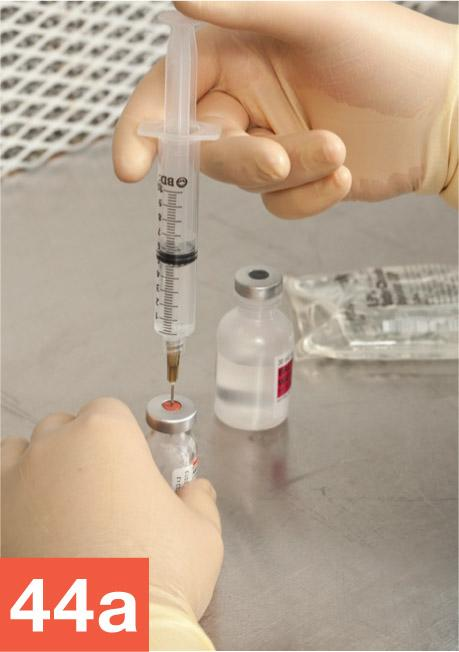
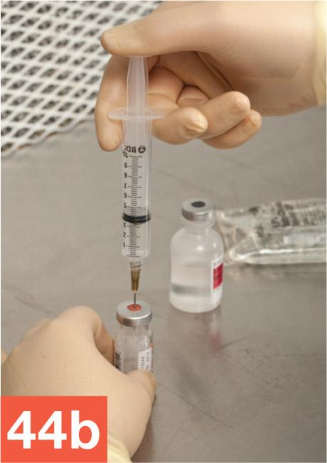
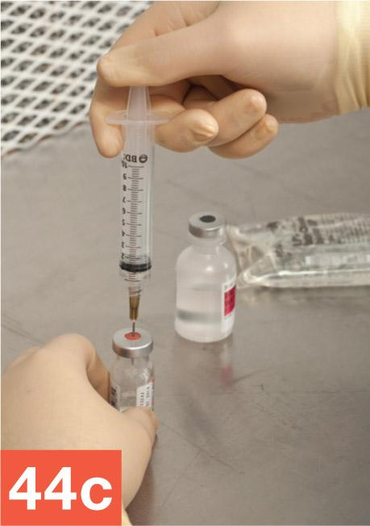
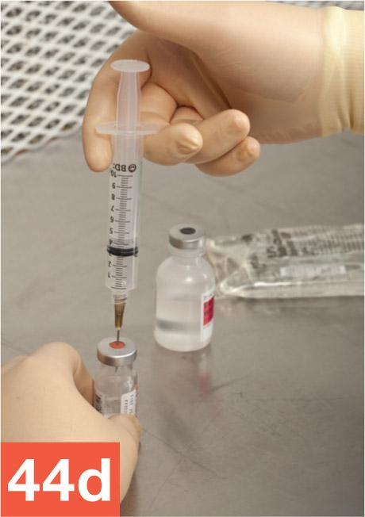
- Stabilize the ampicillin vial against the PEC’s work surface with your hand, and maintain the needle-and-syringe unit’s position above the vial. Gently push down on the flat knob of the plunger with your thumb until you have injected approximately 3 mL of diluent into the ampicillin vial. Release your thumb from the flat knob and allow built-up air pressure to transfer from the ampicillin vial to the syringe. Repeat this milking technique until all of the diluent has been injected into the vial and an equivalent amount of positive air pressure (approximately 5 mL) has transferred into the syringe. Grasp the syringe at the barrel, then carefully pull the needle-and-syringe unit from the vial, and discard it into the sharps container.
- Wipe sterile gloves with sterile 70% IPA and allow to dry thoroughly. Gently shake or swirl the vial to mix the diluent into the powder.
- Bring a 10 mL syringe into the DCA; remove the outer wrapper and, if necessary, remove the syringe cap. Place the syringe’s outer wrapper and cap into the discard pile. Without touching or shadowing the syringe tip, open the needle package and remove the capped needle. Using a twisting motion, attach the capped needle hub to the Luer-lock syringe tip. Temporarily place the needle-and-syringe unit onto the PEC’s work surface within the DCA.
- Open a new, sterile 70% IPA swab package and remove the IPA swab. Place the empty swab package into the discard pile. Wipe the vial stopper and place the used swab into the discard pile.
- Repeat steps 28–39 to draw up the correct volume of ampicillin—in this case, 5 mL.
- Properly arrange the ampicillin syringe, used ampicillin vial, used diluent vial, and IVPB base solution bag on the PEC’s work surface to await a verification check by a pharmacist or your instructor. Position the medication order and CSP label in the outer six-inch zone, immediately in front of the CSP ingredients.
Note: The medication order and CSP label must remain in their plastic bags until compounding procedures are complete.
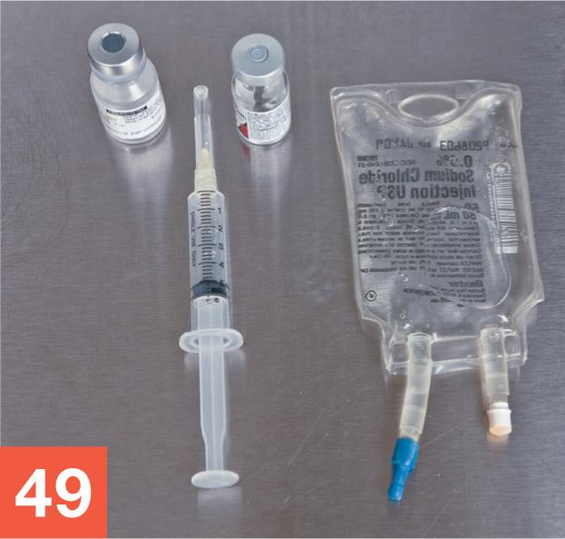
George Brainard/© Paradigm Education Solutions
- Once the verification check has been completed, rearrange the IVPB bag’s injection port and the needle-and-syringe unit within the DCA so that they receive uninterrupted airflow from the PEC’s HEPA filter.
Injecting the Medication into the IVPB Base Solution Bag
- Wipe gloves with sterile 70% IPA and allow your gloved hands to dry. Then open the package of a new, sterile 70% IPA swab, remove the IPA swab, and use the swab to wipe the injection port of the IVPB bag. Place the used swab on the work surface directly under the injection port. Then place the empty swab package into the discard pile.
- Open the package of a new, sterile 70% IPA swab, remove the IPA swab, and place the swab on the PEC’s work surface in an area that receives uninterrupted airflow from the PEC’s HEPA filter. Then place the empty swab package into the discard pile.
- Grasp the barrel of the ampicillin syringe, as you would a dart. Remove the cap of the needle and place it into the discard pile.
- Hold the IVPB’s injection port steady with your hand, taking care to avoid shadowing or touching the injection port. With your other hand, carefully insert the needle straight into the injection port without puncturing the sidewall of the port.
- Inject the medication into the IVPB bag by pressing on the flat knob of the plunger with your thumb or forefinger.
- Holding only the barrel of the syringe, carefully remove the needle-and-syringe unit from the IVPB bag. Discard the needle-and-syringe unit into the sharps container without recapping the needle.
- Wipe sterile gloves with sterile 70% IPA and allow to dry thoroughly. Open a new, sterile 70% IPA swab package, remove the IPA swab, and use the swab to wipe the injection port. Then apply a tamper-evident, sterile, adhesive seal to the injection port.
- Squeeze the IVPB bag and examine it for leaks, precipitates, or other evidence of incompatibility. Remove the CSP label from the plastic bag and affix the label to the IVPB bag.
- Temporarily place the labeled CSP and any used supply items in the outer six-inch zone while you prepare the CSP for Scenario Two.
Compounding the SVP Solution—Scenario Two
- Repeat steps 24–39 using the second 10 mL syringe and the unused SWFI diluent vial.
- Grasp the filled diluent syringe and hold it so that the capped needle is pointing up. Gently pull down the plunger approximately 0.5 mL. This pulling action draws fluid from the needle into the syringe.
- Unscrew and remove the regular needle and temporarily set it near the waste pile.
- Without placing the uncapped syringe on the PEC’s work surface—and without touching or shadowing the syringe tip—hold the barrel of the syringe in your hand. Maintain your hand position within the DCA so that the syringe tip receives uninterrupted airflow from the PEC’s HEPA filter.
- While holding the barrel of the syringe in your hand—and while keeping the syringe tip pointed toward the PEC’s HEPA filter—use the fingers of both hands to carefully peel apart the vented needle wrapper. Take care not to touch or shadow the syringe tip or capped, vented needle hub at any time. Remove the capped vented needle and use a twisting motion to gently screw the needle hub onto the syringe tip. Place the vented needle wrapper into the discard pile.
Reconstituting and Venting a Powdered Drug Vial Using a Vented Needle
- Bring the second ampicillin vial into the DCA and remove the vial’s flip-top cap. Open the package of a new, sterile 70% IPA swab, remove the IPA swab, and use the swab to wipe the top of the ampicillin vial. Place the used swab, empty swab package, and flip-top cap into the discard pile.
- Open the package of a new, sterile 70% IPA swab, remove the IPA swab, and place the swab onto the PEC’s work surface in an area that receives uninterrupted airflow from the HEPA filter.
- Grasping the barrel of the syringe like a dart, remove the cap of the vented needle. Place the vented needle cap onto the IPA swab within the DCA. Be sure that the open end of the cap is pointed toward the PEC’s HEPA filter.
- While bracing the ampicillin vial against the PEC’s work surface, insert the vented needle directly into the vial stopper.
- Maintain the needle in the vial at such a depth that the hub of the needle stays approximately one-eighth inch above the vial stopper. Then inject the diluent into the ampicillin vial.
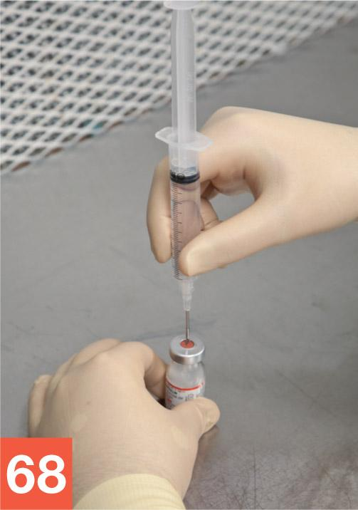
George Brainard/© Paradigm Education Solutions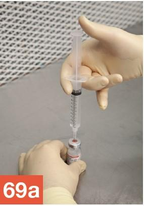
George Brainard/© Paradigm Education Solutions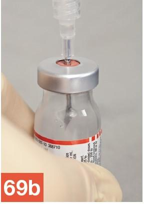
George Brainard/© Paradigm Education Solutions
- Correctly grasp the barrel of the syringe, taking care not to touch the plunger, and remove the needle-and-syringe unit from the vial. Discard the capped needle placed near the discard pile with the vented needle-and-syringe unit into the sharps container.
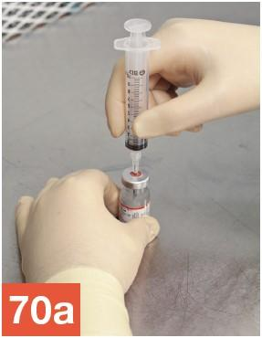
George Brainard/© Paradigm Education Solutions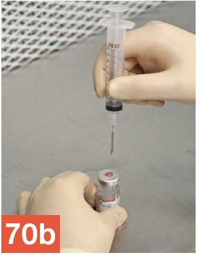
George Brainard/© Paradigm Education Solutions
- Wipe sterile gloves with sterile 70% IPA and allow to dry thoroughly. Using the 3 mL syringe and a regular needle, repeat steps 25–27 to prepare the regular needle, 3 mL syringe, and diluted ampicillin vial for compounding.
- Grasp the empty 3 mL syringe—with attached regular needle—at the barrel, as you would a dart. Hold the syringe steadily, and with your other hand, remove the needle cap by pulling it carefully but firmly off of the needle. Place the needle cap, with the open end pointing toward the PEC’s HEPA filter, on top of the IPA swab on the work surface.
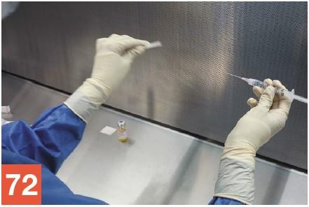
George Brainard/© Paradigm Education Solutions
- Use your fingers to rotate the barrel of the syringe so that the bevel of the needle is pointed up toward the ceiling.
- While bracing the diluted ampicillin vial against the PEC’s work surface, place the tip of the needle, bevel up, onto the center of the vial stopper.
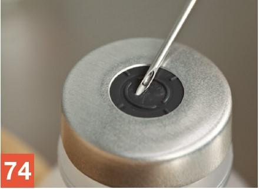
George Brainard/© Paradigm Education Solutions
- Insert the needle into the vial using a slight upward rotation of the wrist (rotating in a counterclockwise direction if you are right-handed and in a clockwise direction if you are left-handed). Keep the tip of the needle in contact with the vial stopper at all times. There should be a slight, almost imperceptible, bend to the needle as it enters the vial.
- Hold the ampicillin vial with your one hand and the syringe, with needle firmly inserted into the vial, with your other hand. Invert the vial using a clockwise motion (a counterclockwise motion if you are left-handed), so that the needle-and-syringe unit is now below the vial.
- Continue to hold the ampicillin vial with your thumb and forefinger. While holding the barrel of the syringe so that the needle tip remains in the ampicillin fluid within the vial, pull down on the flat knob of the plunger until approximately 3 mL of fluid has been drawn into the syringe.
- Repeat steps 35–39 to draw up exactly 2.5 mL of ampicillin into the syringe.
- Properly arrange the ampicillin syringe, used ampicillin vial, used diluent vial, and IVPB base solution bag for Scenario Two on the PEC’s work surface to await a verification check by a pharmacist or your instructor. Position the medication order and CSP label in the outer six-inch zone, immediately in front of the CSP ingredients.
Note: The medication order and CSP label must remain in their plastic bags until compounding procedures are complete.
- Repeat steps 51–57 to inject the medication into the IVPB bag used for Scenario Two and to apply a tamper-evident, sterile, adhesive seal to the injection port.
- Repeat steps 58 and 59, which address the inspection and proper labeling of the IVPB bag.
Cleaning Up after the Procedures
- Dispose of the waste from the discard pile into the regular waste container. Discard any remaining used swabs and needle caps into the waste container as well. Then transfer the labeled CSPs and any remaining supply items from the PEC into the transport vehicle and return the vehicle to the anteroom.
- In the anteroom, record the BUD and your initials in the proper locations on both of the CSP labels.
- Remove your garb according to the standard protocol outlined in Chapter 8. Return any unused supply items to their proper locations.
- Await a directive from your instructor regarding the completed CSP. In practice, you would follow your facility’s protocol and either place the CSP in the proper storage location (refrigerator, shelf, etc.) or deliver the CSP to be administered to the patient.